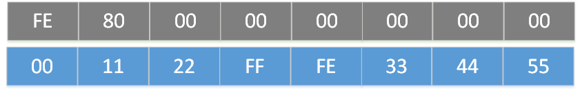

To uniquely identify devices in the network, they must be assigned a link-local IPv6 address. This address is based on the interface identifier (IID), which is derived from the Bluetooth Device address. You should be familiar with the IPv6 addressing model as defined in specification RFC 4291 to understand the following content.
Link-local addresses are designed to be used for addressing on a single link for purposes such as automatic address configuration or when no routers are present. Routers are not allowed to forward any packets with link-local source or destination addresses to other links. Therefore, to communicate with the outside world, a global address must be created; see Distributing a global IPv6 prefix for instructions on how to do that.
Link-local addresses contain the prefix FE80::/10 and a 64-bit interface identifier (IID). The link-local address is automatically assigned to the interface and has a role similar to an IPv4 local address, for example, 192.168.0.0/16.
Creating an IPv6 link-local address
Creating an IPv6 link-local address comprises three steps:
- Transforming the Bluetooth device address into Modified EUI-64 format
- Transforming the Modified EUI-64 address into an IID
- Transforming the IID into a link-local address
- Note
- The steps differ for various Linux Kernel versions and for different Bluetooth Device address types.
Linux Kernel versions < 4.12 (Legacy IID derivation)
Public Bluetooth Device Address

Figure 1. Bluetooth device address - public
- Create a modified EUI-64 address.
Extend the 48-bit address to a 64-bit address, which is used as MAC address in IPv6. To do this, you must add the bytes 0xFF and 0xFE in the middle of the 48-bit address.

Figure 2. Modified EUI-64 address
- Create an IID.
Set the address as globally unique. Do this by flipping the seventh most significant bit of the first byte (bitmask 0x02). The same result is achieved by an XOR operation with a 0x02 value on the first octet. The resulting ID is the interface identifier.

Figure 3. Interface ID
- Create a link-local address.
Add the link-local prefix FE80::/10 to the IID.

Figure 4. Link-local address
In this example, the link-local address for the Bluetooth device address 00:11:22:33:44:55 is FE80:0000:0000:0000:0211:22FF:FE33:4455, or simpler FE80::211:22FF:FE33:4455.
Random Static Bluetooth Device Address
For example, consider the following 48-bit random static Bluetooth address: C0:11:22:33:44:55

Figure 5. Bluetooth device address - random static
- Create a modified EUI-64 address.
Extend the 48-bit address to a 64-bit address, which is used as MAC address in IPv6. To do this, you must add the bytes 0xFF and 0xFE in the middle of the 48-bit address and set the 7th bit of the first octet using 0x02. Therefore, the modified IID is C2:11:22:33:44:55.

Figure 6. Modified EUI-64 address
- Create an IID.
As the address is not globally unique, the universal/local bit in the IID shall be set to 0. Since the modified EUI-64 has this bit set using the OR operation with 0x02, performing XOR operation on this first octet of EUI-64 results provides the desired result. Note that the XOR operation is common for public and random address.

Figure 7. Interface ID
- Create a link-local address.
Add the link-local prefix FE80::/10 to the IID.

Figure 8. Link-local address
In this example, the link-local address for the Bluetooth device address C0:11:22:33:44:55 is FE80:0000:0000:0000:C011:22FF:FE33:4455, or simpler FE80::C011:22FF:FE33:4455.
Linux Kernel versions >= 4.12 (IID derivation according to RFC 7668)
- Note
- In order to comply with RFC 7668 (Linux Kernel >= 4.12), set the BLE_6LOWPAN_LEGACY_MODE define in
sdk_config.h to 0. If this define is set to 1, 6LoWPAN module will not be able to decompress packets correctly.
Bluetooth Device Address (Public or Static Random)
Figure 9. Bluetooth device address
- Create an IID.
Extend the 48-bit address to a 64-bit IID, which is used in IPv6 addresses. To do this, you must add the bytes 0xFF and 0xFE in the middle of the 48-bit address.

Figure 10. Interface ID
- Create a link-local address.
Add the link-local prefix FE80::/10 to the IID.

Figure 11. Link-local address